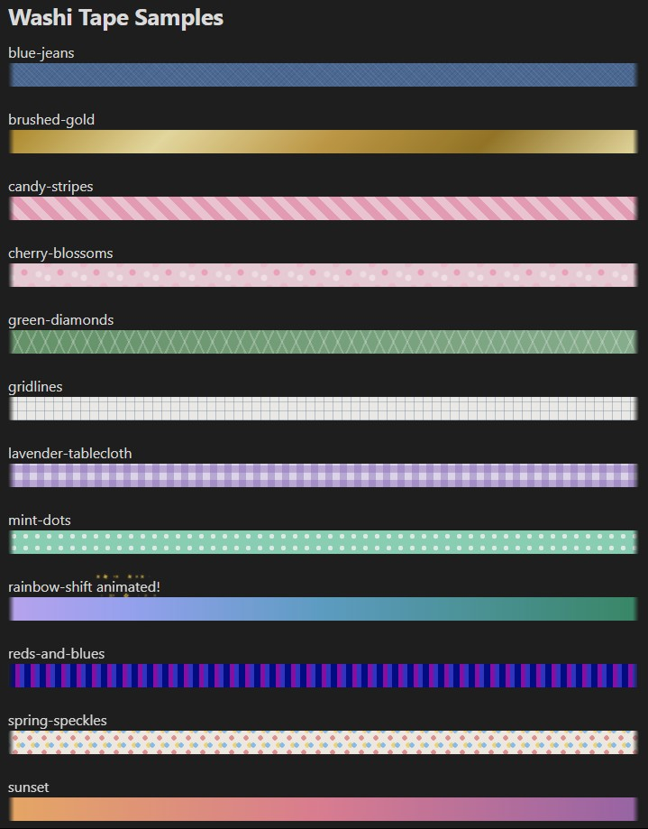

callmekt
HomeJournal Mode - A Plugin for Obsidian
I created my dream plugin for Obsidian - Journal Mode!
It's not permitted to mention a copyrighted work in your plugin's description, but I had Paper Mario in mind when thinking about the "shiver" animated text effect.
Digital note apps are useful, but they can be pretty dull compared to the magic that pens, stickers, tapes, and other stationery. It's hard to make an Obsidian notebook feel as personal and fun as a well-loved Hobonichi or Moleskine.
I created this plugin to make digital note taking more like journaling - expressive, playful, and aesthetic!
Activate Journal Mode!
How To Install
Check it out on the Community Plugin Library!
(You can also browse the plugin library from inside Obsidian itself on your computer or phone. Just search for "Journal Mode".)
Or grab the source code / compiled plugin from Github directly.
Features
- Color just certain words in your tex.
- Use computer magic on your digial notes
- Animate your text with wiggles and waves like Runescape and Paper Mario
- Add animated sparkles around your words ✨
- Add digital "washi tape" dividers.
- Easily add your own designs, too
- Doesn't leave huge blobs of HTML everywhere that makes your notes unreadable in other apps.
Image Gallery
In Action
Built-In Washi Tape Styles
